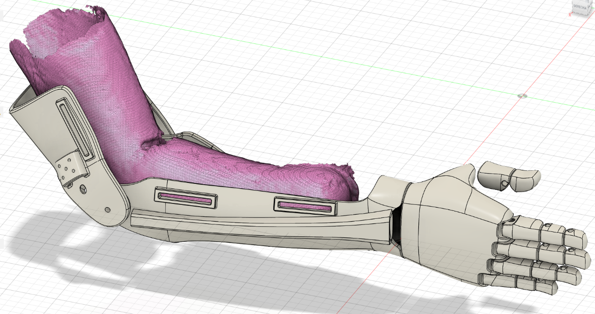
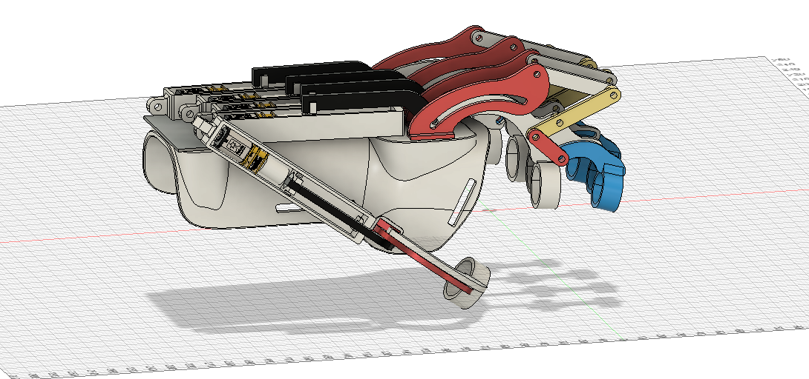
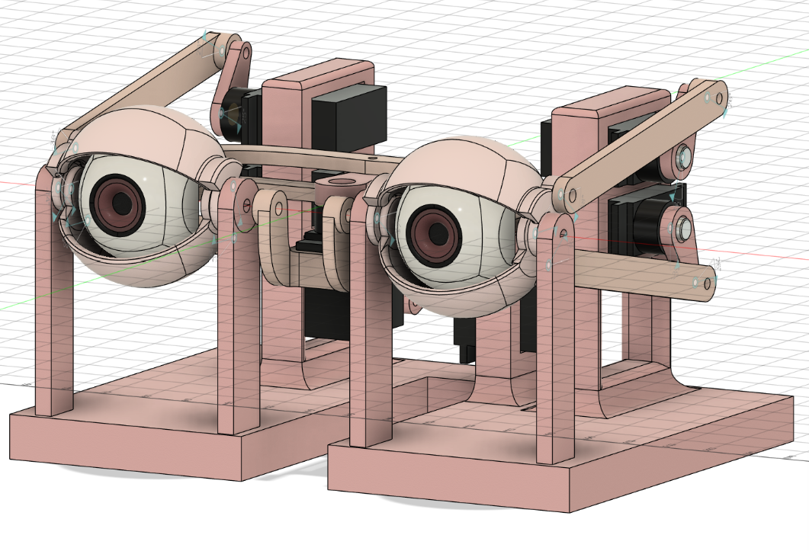

Hands-on projects and practical applications from my coursework and personal development, grouped by area.

Biomechanical Prosthetics 3D Step-by-Step
Comprehensive training in designing and manufacturing 3D printed biomechanical prosthetics from concept to final product.
3D PrintingBiomechanicsCAD Design
Bionic Prosthetics 3D: Basic Model
Fundamental concepts and practical implementation of basic bionic prosthetic designs with motorization principles.
Bionic DesignFusion 360Mechatronics
Bionic Prosthetics 3D: Intermediate Model
Advanced bionic prosthetic systems incorporating sensors, actuators, and control mechanisms for enhanced functionality.
Advanced DesignControl SystemsIntegration
Motorization and Control of Biomechanical Prosthetics 3D
Implementation of motor control systems and sensor integration for functional biomechanical prosthetic devices.
Motor ControlArduinoElectronics

Exoskeletons
Design and development of wearable exoskeleton systems for mobility assistance and rehabilitation applications.
Exoskeleton DesignBiomechanicsRehabilitation
Prosthetic Devices for Pets
Specialized prosthetic design and manufacturing for veterinary applications, adapted to different animal anatomies.
Veterinary DesignCustom Fitting3D Printing
Introduction to Parametric Design with Autodesk Fusion 360
Advanced parametric modeling techniques using Fusion 360 for biomedical and mechanical design applications.
Fusion 360Parametric DesignCAD
Selected Topics in Fusion360
Specialized Fusion 360 workflows for complex assemblies, simulations, and advanced modeling techniques.
Advanced CADSimulationAssembly Design
3D Mechanism Design with Bionic Focus
Design and analysis of biomimetic mechanisms inspired by natural systems for robotic and prosthetic applications.
Mechanism DesignBiomimeticsKinematics
Stress Analysis in Biomechanical Parts
Finite element analysis (FEA) and structural optimization for biomechanical components and medical devices.
FEAStructural AnalysisOptimization
Design and Production of 3D Splints
Custom orthotic splint design using 3D scanning and parametric modeling for patient-specific medical devices.
Medical DevicesCustom FittingOrthotics

3D Bio-Cover for Leg
Design and fabrication of aesthetic and functional leg covers for prosthetic devices using additive manufacturing.
Prosthetic CoversAesthetic Design3D Printing
Optimization Techniques for Mechanical Design
Advanced optimization methods including topology optimization and generative design for biomedical applications.
Topology OptimizationGenerative DesignCAE
3D Printing from Scratch
Comprehensive introduction to 3D printing technologies, materials, and best practices for biomedical applications.
FDM PrintingSlicingMaterials
3D Printing: Basic Principles and Guided Practices
Advanced 3D printing techniques including multi-material printing, support strategies, and post-processing methods.
Advanced PrintingMulti-MaterialPost-Processing
Advanced Additive Manufacturing in Resin (SLA-DLP-Mono)
High-resolution resin-based 3D printing technologies for detailed biomedical models and precision parts.
SLA/DLPResin PrintingHigh Resolution
Bioorganic Design and Biomedical Manufacturing
Organic modeling techniques and biomedical manufacturing processes for anatomically accurate medical models.
Organic ModelingMedical ModelsAnatomical Design
Physics of 3D Printing
Understanding the fundamental physics behind additive manufacturing processes, material behavior, and quality optimization.
Material SciencePrint PhysicsQuality Control
Ender 3D Printer Optimization for Bionic Systems
Custom modifications and optimization of Ender 3D printers for specialized bionic and biomedical applications.
Printer ModificationOptimizationCustom Setup
Advanced Materials
Exploration of advanced materials for biomedical applications including biocompatible polymers and composite materials.
BiomaterialsCompositesMaterial Selection
Introduction to Robot Design and Construction
Fundamentals of robotic systems design, including kinematics, dynamics, and control systems for mobile robots.
RoboticsKinematicsControl Systems
Robotic Hand: Design and Construction
Complete development of an articulated robotic hand including mechanical design, actuation, and sensor integration.
Robotic HandActuationSensors
Design and Construction of a Robotic Finger
Detailed study of finger mechanisms, tendon-driven systems, and precision control for dexterous manipulation.
Finger DesignTendon SystemsPrecision Control

Design and Construction of an Animatronic
Creating life-like animatronic systems with synchronized movements and realistic expressions for entertainment and education.
AnimatronicsServo ControlSynchronized Motion
Design and Construction of a Flexible Bio-Gripper
Soft robotics approach to gripper design using flexible materials and adaptive grasping strategies.
Soft RoboticsAdaptive GraspingFlexible Materials
Hexapod Bio-Robots
Six-legged walking robots inspired by insect locomotion, including gait generation and terrain adaptation.
HexapodGait GenerationLocomotion
Quadruped Robots
Four-legged robotic platforms with dynamic balance and advanced locomotion capabilities for complex terrains.
QuadrupedDynamic BalanceAdvanced Locomotion
Educational BioRobot (InMoov Model)
Building and programming a full-scale humanoid robot based on the open-source InMoov project for research and education.
Humanoid RobotInMoovOpen Source
Introduction to Electronics
Fundamental electronics principles including circuit analysis, component selection, and PCB design for biomedical devices.
ElectronicsCircuit DesignPCB
Basic EMG Sensor Step-by-Step
Design and construction of electromyography (EMG) sensors for muscle activity detection and prosthetic control.
EMGBiosignalsAmplification
Basic Electrocardiogram Sensor (ECG)
ECG sensor development using instrumentation amplifiers for cardiac signal acquisition and processing.
ECGCardiac SignalsMedical Sensors
Electrooculogram Sensor (EOG)
Development of EOG sensors for eye movement tracking and human-machine interface applications.
EOGEye TrackingHMI
Electronic Design of Biosignal Sensors
Advanced circuit design and simulation for various biological signal acquisition systems with noise reduction techniques.
Biosignal ProcessingCircuit SimulationNoise Reduction
Biological Signal Processing
Digital signal processing techniques for filtering, feature extraction, and analysis of biomedical signals.
DSPSignal AnalysisFeature Extraction
Electronic Devices
Study of semiconductor devices, transistors, and integrated circuits for biomedical electronics applications.
SemiconductorsTransistorsIC Design
Applied Electronics: RLC, Diodes and Voltage Regulation
Advanced electronic components and power regulation systems for embedded biomedical device applications.
Power ElectronicsVoltage RegulationDiodes
Introduction to Programming with Arduino
Embedded programming fundamentals using Arduino platform for sensor integration and actuator control.
ArduinoC/C++Embedded Systems
Programming with Python
Python programming for data analysis, automation, and machine learning applications in biomedical engineering.
PythonData AnalysisAutomation
Computer Vision with OpenCV
Real-time image processing and computer vision applications using OpenCV for gesture recognition and object detection.
OpenCVComputer VisionReal-Time Processing
Robotic Hand Control with Computer Vision / OpenCV
Integration of computer vision and robotic control for gesture-based manipulation of robotic hands.
Gesture RecognitionRobot ControlReal-Time Vision
Neural Networks and Artificial Intelligence
Fundamentals of neural networks and AI implementation for pattern recognition in biomedical applications.
Neural NetworksAIPattern Recognition
Introduction to Neural Networks and Deep Learning
Deep learning architectures and training techniques for medical image analysis and biosignal classification.
Deep LearningCNNsMedical AI
Deep Neural Networks and Supervised Learning
Advanced deep learning techniques including transfer learning and model optimization for biomedical datasets.
Advanced DLTransfer LearningModel Training
STM32F407VG Programming with Simulink
Model-based design and code generation for embedded systems using MATLAB/Simulink and STM32 microcontrollers.
SimulinkSTM32Model-Based Design
Introduction to Motor Control with Arduino
DC, servo, and stepper motor control using Arduino for robotic and mechatronic applications.
Motor ControlPWMArduino
Introduction to Sensor Programming and Use
Integration and programming of various sensors including ultrasonic, IR, and environmental sensors.
Sensor IntegrationData AcquisitionCalibration
Programming and Use of Multi-Functional Sensors
Advanced sensor fusion techniques combining multiple sensor inputs for robust perception systems.
Sensor FusionIMUMulti-Sensor Systems
Easy Module and Advanced Sensors
Working with advanced sensor modules and development boards for rapid prototyping of sensing systems.
Advanced SensorsModule IntegrationPrototyping
Wireless Applications (Bluetooth)
Bluetooth communication protocols and wireless control systems for IoT and wearable medical devices.
BluetoothWireless CommunicationIoT
Virtual Reality
VR application development for medical training simulations and rehabilitation exercises using Unity and VR SDKs.
Unity VRMedical SimulationImmersive Experience
Biomimetics
Study and application of biological principles to engineering design, focusing on nature-inspired solutions.
BiomimeticsBio-Inspired DesignNature Engineering
3D Respirators and Devices
Design and manufacturing of respiratory support devices and emergency medical equipment using 3D printing.
Medical DevicesRespiratory SupportEmergency Equipment
Structural Analysis
Finite element analysis and structural optimization for biomedical implants and orthopedic devices.
FEAStructural MechanicsImplant Design